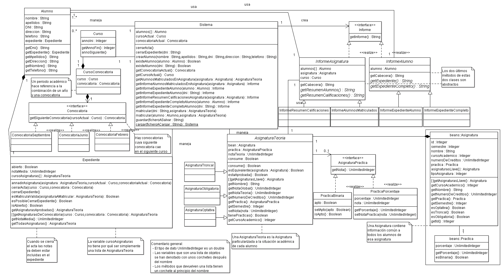

Programación Orientada a Objetos. Curso 08/09
Práctica 2. Clases y Herencia
Duración: Semanas del 09, 16 y 23 de marzo (para detalles ver el calendario de prácticas)
Entrega y examen: Semana del 30 de Marzo (para ver la fecha de cada grupo ver el calendario)
Objetivo
Tras la primera práctica de la asignatura el alumno tiene una visión más profunda del problema, ya que se ha visto obligado a analizarlo, a entender el diagrama que lo define y a completarlo en consecuencia.
El objetivo de esta práctica es implementar en Java un proyecto desde cero a partir de un diseño orientado a objetos dado en UML. La razón por la que se parte de un diagrama ya creado es para obligar al alumno a aprender a pensar orientado a objetos.
El resultado final de esta práctica será un sistema de gestión de expedientes que permita realizar todas sus funcionalidades a través de la línea de comandos. Es muy importante aislar la parte de la entrada y salida de datos del resto de la funcionalidad, ya que esto hará que la próxima práctica (interfaces gráficas) sea más fácil de adaptar.
Se valorará en gran medida un diseño que haga uso de aspectos tales como la herencia de clases, el polimorfismo o sobrecarga de métodos y la reutilización de clases Java estándar.
Diagrama de clases
El diagrama completo y comentado que se utilizará en esta práctica se puede enconrtar a continuación:

Pruebas
No se prevé entregar ningún conjunto de test durante el desarrollo de esta práctica. Sí se entrega un conjunto de clases (las que pertenecen al paquete beans) que permite cargar a petición en el sistema una lista de asignaturas, con todos sus datos incluidos.
Sólo mencionar que el sistema implementado por el alumno debe hacer al mayor número de particularidades inherentes a un sistema de gestión de expedientes, como por ejemplo el intentar añadir una matrícula a un expediente cerrado, permitir que haya asignaturas que no consuman convocatoria, contemplar todos los casos posibles en que una asignatura puede estar aprobada o suspensa, ...
Entrega
Las prácticas se deben entregar antes de la fecha de corrección
indicada al comienzo del enunciado, teniendo en cuenta las horas límite
de entrega mencionadas en las normas
de la asignatura. En general, el grupo del lunes tiene hasta las 12 del
mediodía del mismo lunes, y
todos los demás grupos tienen hasta
las 12 de la noche del día anterior a la fecha de
corrección.
De nuevo, siguiendo las normas de
la asignatura, el fichero .zip
a entregar debe incluir:
- un leeme.txt que
describa los ficheros incluidos en el .zip
- el build.xml usado para
compilar y ejecutar la práctica (en general, con el que se entrega con
el enunciado vale).
- una memoria.{pdf,
rtf, odt}. En este caso, la memoria
puede ser bastante breve, y basta con que expliquen las
ideas principales de la implementación de cada una de las funciones
incompletas. También se
debe decir si se ha conseguido pasar todos los casos de prueba, o si
alguno ha dado fallos. En caso de que se produzcan fallos, se debe
explicar cómo se ha intentado resolverlos. Esto sólo vale para
esta primera práctica: en la P2, P3 y P4, las memorias deberán seguir otros criterios.
- los ficheros de prueba
usados para verificar que la práctica funciona. Sobre todo, si se han
modificado para probar casos específicos.
- y los fuentes, en un
directorio llamado "src" con la estructura de directorios necesaria
para que, descomprimiendo el .zip
entregado y escribiendo "ant run" (es decir, ejecutando el "build.xml" includido en el .zip), la práctica se compile y
ejecute correctamente los casos de prueba.
NOTA:
Las entregas que no cumplan los requisitos enumerados en las normas
recibirán una penalización de 0.5 puntos.
Apéndice: Sobre estas prácticas
Este apartado contiene una serie de reflexiones sobre el enfoque de
estas prácticas, porqué se hacen así, y qué se va a pedir en las
siguientes prácticas.
Código en los enunciados
Las prácticas de POO se diferencian de otras en que, junto con cada
enunciado, se entrega bastante código. Esto se hace por los siguientes
motivos:
- Java no es C. Se espera
que todos los alumnos tengan un nivel bastante alto de programación en
C. La sintaxis de Java es muy similar a la de C, y si las primeras
prácticas pidiesen escribir un programa desde cero, el resultado no
tendría nada de orientación a objetos. Si se parte de un programa con
diseño OO, se evita el riesgo de que todo el programa esté compuesto de
métodos "public static".
- Convenciones en Java. hay
mucha más uniformidad en cuanto a estilo de programación en Java que en
otros lenguajes. Hay convenciones de nombrado de clases y de variables,
convenciones sobre los nombres dados a métodos, de formato de
comentarios de cabecera, de indentado, de organización en paquetes,
etcétera. Es mejor partir de un ejemplo en el que todo está escrito
siguiendo estas convenciones que intentar que se apliquen desde cero,
son muchas.
- Uso de librerías.
Programar en Java tiene un gran componente de saber usar código
existente: las librerías disponibles son uno de los puntos fuertes de
Java. Esto es menos cierto en C, donde la mayor parte de las librerías
son externas (y por tanto, no tan estándares). Es fundamental perder el
miedo a las librerías y saber manejar su documentación desde un primer
momento.
- OO y Patrones. La
orientación a objetos promueve la reutilización no sólo de código, sino
también de estrategias de diseño ("patrones de diseño"). Esto se da en
mucho mayor medida que en lenguajes menos abstractos, tipo C. En el
código que se entrega se hace uso de varios patrones establecidos. La
idea es que, desarrollando y extendiendo sobre un buen diseño, se
mejora la capacidad de entender y crear buenos diseños.
(C) 2008-2009 Escuela Politécnica Superior, UAM